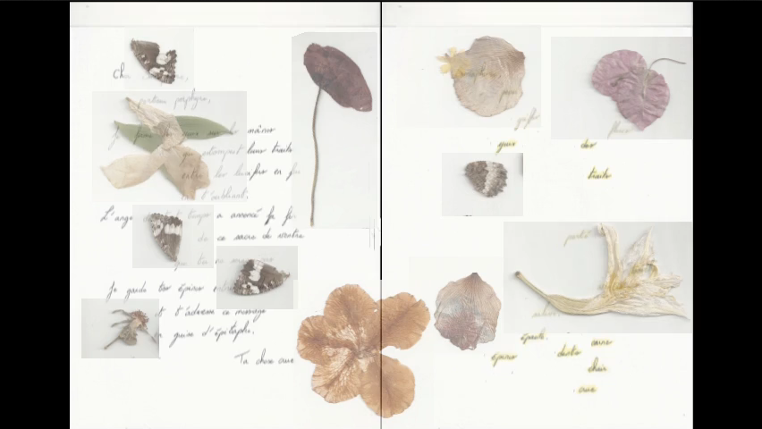
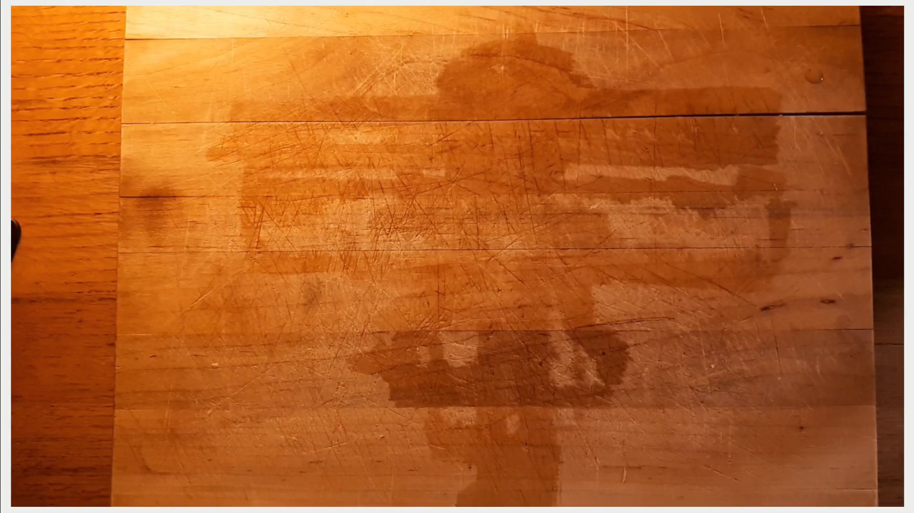

Je dois relire L’image écrite ou la déraison graphique d’Anne-Marie Christin (2009).
Pour des questions d’intérêts de relecture, parce que c’est un ouvrage passionnant et inépuisable, mais aussi parce que je réalise que ses réflexions ont hautement influencé mes créations, et notamment le principe d’image finale de mes textes.
Signe | Divination | Sens #
Anne-Marie Christin a notamment cette réflexion sur la trace à l’origine de l’écriture, et du processus de divination comme préliminaire de l’écriture. Discours sur des figures du monde, la divination fait se rencontrer parole et image dans le but de communiquer avec un plus haute entité.
On lit les signes du réel.
La matière du signe peut être
une image,
une pierre lisse qui sonne creux,
une étoile un peu plus pâle que les autres,
une panse de brebis blanche qui reste tiède,
un extrait de Houellebecq.
En somme le principe du signe c’est celui du sens qu’on lui donne, qu’on lui organise et qu’on doit transmettre selon un autre régime, celui de la parole.
Là où cette réflexion m’a influencé c’est dans le mouvement d’émergence du signe : du passage de la forme brute à un discours, à un texte, à une réflexion qui cherche à lire une portion du monde1.
Trace du brut #
En éditant la zone Textes Vidéos, je me suis aperçue que certaines des créations allaient dans le même sens de conclusion :
finir sur une image finale du texte,
qui se présente comme un condensé des traces d'écriture,
qui empilent les états d'écriture pour les rendre absents.
C’est le renversement du mouvement de l’émergence du signe, on remonte à ce que le signe avait de brut avant d’être lu et formulé par le régime de la langue. Et c’est, dans le cas des créations concernées, le motif à l’origine de la démarche. Il y a au début de la création la projection d’un état du texte qui témoigne de tous ses mouvements et de toutes les manipulations qui ont été faites pour éditer/fabriquer l’objet textuel.
Peut-être au fond que tout le but de ces textes là était de remonter le courant pour retrouver l’étant du avant qu’ils ne soient textes.
Images finales du texte #
Lettre au Somaphore (2020) #

Faire Page Paysage (2021) #

Celles qui survivent aux hommes (2022) #
 en cours de publication
En écho les créations mentionnées défilent ici
-
Pour la lecture et la portion du monde : À quoi elle sert ta thèse ? ↩︎